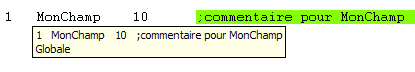
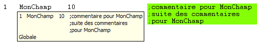
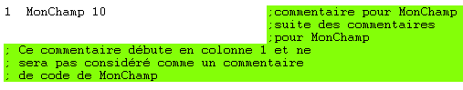
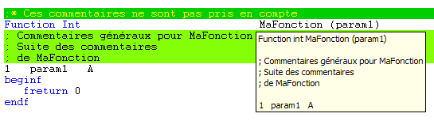
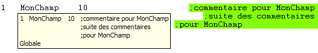
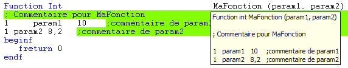
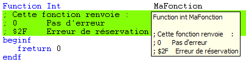
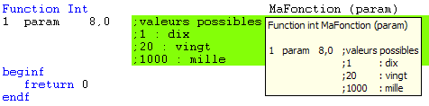
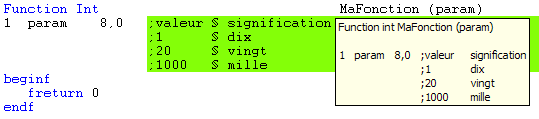

Les commentaires de code sont des commentaires, placés dans des fichiers de code source de telle manière qu'ils sont ensuite disponibles pour les utilisateurs via la fonctionnalité Information rapide sur un membre.
Commenter un membre
Tout commentaire placé sur la même ligne que la ligne de déclaration du membre est un commentaire de code. Par exemple :

Commenter un membre sur plusieurs lignes
Il FAUT d'abord faire débuter le commentaire sur la ligne même de la déclaration du membre à commenter. Ensuite, les lignes qui suivent la ligne de déclaration et qui sont elles-mêmes des lignes de commentaires (à condition toutefois que le ";" ne soit pas placé en colonne 1) sont encore considérées comme des commentaires de code pour le membre. Par exemple :

Un commentaire s’arrête donc à la rencontre d’une ligne à contenu effectif, d’une ligne blanche ou d’un commentaire débutant en colonne 1. Pour stopper le premier commentaire d'un groupe de deux commentaires successifs indépendants, il faut donc mettre une ligne blanche entre les deux ou faire débuter le deuxième en colonne 1. Par exemple :

Commenter une procédure ou une fonction
Conventionnellement, sont considérés comme les commentaires de code d'une fonction toutes les lignes consécutives de commentaires, situées entre la déclaration de la fonction et la déclaration des paramètres ou des données locales (beginp / beginf par défaut). Par exemple :

Commenter les paramètres d'une procédure ou d'une fonction
Les règles sont les mêmes que celles régissant les commentaires d'un membre simple.
Aligner les commentaires d'un membre
De base, les commentaires présents sur plusieurs lignes sont automatiquement alignés sur le ";", même s'ils ne le sont pas dans le code source. Par exemple :

Plus généralement, les lignes de déclaration de paramètre font l’objet d’une mise en forme automatique pour aligner respectivement les numéros de niveau, les noms des paramètres, leurs natures et les commentaires. Par exemple :

Mise en forme avancée des commentaires
Les alignements que vous avez prévus dans vos sources à l'intérieur des commentaires ne seront pas respectés dans la fenêtre d'information express car la police qui y est utilisée est la police proportionnelle des menus Windows, alors que celle employée pour afficher le code source est fixe. Par exemple :

Pour préserver les alignements à l’intérieur des commentaires et améliorer ainsi leur présentation et leur lisibilité, un mécanisme conventionnel de tabulations explicites (dans la limite de 10 tabulations par ligne, y compris les tabulations de mise en forme automatique pour les lignes de déclaration de paramètre) est proposé :
Le caractère ":" fait automatiquement l'objet d'une tabulation. Par exemple :

Le caractère "§" est remplacé par une tabulation. Par exemple :

Remarque :
Dans le cas d'une procédure / fonction comportant des commentaires généraux et des commentaires sur les paramètres, les alignements sont calculés indépendamment pour ces deux groupes de commentaires.
Pour insérer des commentaires de code
Pour afficher la liste des membres
Pour afficher la fenêtre des paramètres
Pour afficher la fenêtre d'information rapide